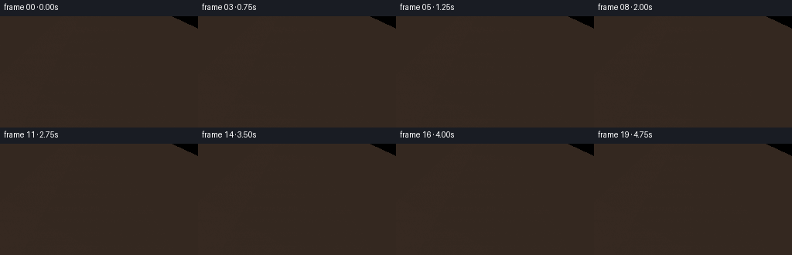
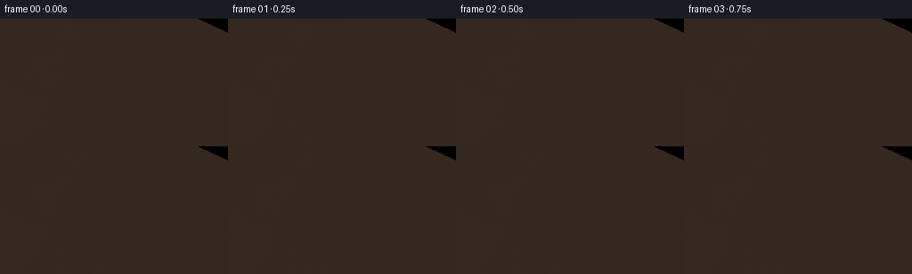

CODING AGENTS AS PIXEL WORLD MODELS
traex/Seed-2.1-Pro-0915 · phygen_022
点击播放 · 原生 RGB 像素
逐轮保存的候选
回放视频、检查图与代码变化。
每份候选均可单独播放。实际图片检查记录在下方工具轨迹中。
候选 01播放与检查图
点击播放 · 原生 RGB 像素


展开代码变化
--- 上一保存版本
+++ 本次保存版本
@@ -0,0 +1,284 @@
+"""Procedural RGB video: a pencil slowly pressing into a stretched rubber sheet.
+
+Everything is rendered with numpy only: a z-buffered perspective triangle
+rasterizer draws a deformed rubber membrane mesh, a wooden hoop, a tabletop,
+and a faceted pencil (graphite tip, sharpened wood, painted barrel, ferrule).
+No external assets, models, or learned weights are used.
+"""
+import math
+
+import numpy as np
+from PIL import Image
+
+import artifact_io
+
+W, H, N, FPS = 256, 144, 20, 4.0
+
+# ------------------------------------------------------------- camera / world
+CX, CY = 128.0, 90.0 # screen center of the scene (pixels)
+FOCAL = 300.0
+PITCH = 0.42 # radians, looking down onto the sheet
+CP, SP = math.cos(PITCH), math.sin(PITCH)
+CAM_D = 4.2 # camera distance along its view axis
+
+RING_R = 1.35 # membrane radius in world units
+TIP_X = 0.0 # pencil contact point on the membrane
+
+
+def view_rotate(p):
+ """Rotate world points into camera space (camera looks down -Z_cam)."""
+ x, y, z = p[..., 0], p[..., 1], p[..., 2]
+ return np.stack([x, CP * y - SP * z, SP * y + CP * z], axis=-1)
+
+
+def project(points):
+ """World points -> screen (u, v, camera-space depth)."""
+ vp = view_rotate(np.asarray(points, dtype=np.float64))
+ zc = CAM_D - vp[..., 2]
+ s = FOCAL / zc
+ u = CX + vp[..., 0] * s
+ v = CY - vp[..., 1] * s
+ return u, v, zc
+
+
+# ------------------------------------------------------------ z-buffer raster
+class Canvas:
+ def __init__(self):
+ self.img = np.zeros((H, W, 3), dtype=np.float64)
+ self.zbuf = np.full((H, W), np.inf)
+
+ def tri(self, p0, p1, p2, color):
+ u0, v0, z0 = project(p0)
+ u1, v1, z1 = project(p1)
+ u2, v2, z2 = project(p2)
+ xmin = max(int(math.floor(min(u0, u1, u2))), 0)
+ xmax = min(int(math.ceil(max(u0, u1, u2))), W - 1)
+ ymin = max(int(math.floor(min(v0, v1, v2))), 0)
+ ymax = min(int(math.ceil(max(v0, v1, v2))), H - 1)
+ if xmin > xmax or ymin > ymax:
+ return
+ area = (u1 - u0) * (v2 - v0) - (u2 - u0) * (v1 - v0)
+ if abs(area) < 1e-9:
+ return
+ xs = np.arange(xmin, xmax + 1) + 0.5
+ ys = np.arange(ymin, ymax + 1) + 0.5
+ gx, gy = np.meshgrid(xs, ys)
+ w0 = ((u1 - gx) * (v2 - gy) - (u2 - gx) * (v1 - gy)) / area
+ w1 = ((u2 - gx) * (v0 - gy) - (u0 - gx) * (v2 - gy)) / area
+ w2 = 1.0 - w0 - w1
+ hit = (w0 >= 0) & (w1 >= 0) & (w2 >= 0)
+ z = w0 * z0 + w1 * z1 + w2 * z2
+ region_z = self.zbuf[ymin:ymax + 1, xmin:xmax + 1]
+ sel = hit & (z < region_z)
+ if not np.any(sel):
+ return
+ self.img[ymin:ymax + 1, xmin:xmax + 1][sel] = color
+ region_z[sel] = z[sel]
+
+ def quad(self, corners, color):
+ self.tri(corners[0], corners[1], corners[2], color)
+ self.tri(corners[0], corners[2], corners[3], color)
+
+
+# --------------------------------------------------------------- scene pieces
+def membrane_y(r, press):
+ """Clamped dent: zero at r = RING_R, deepest at the center."""
+ t = np.clip(r / RING_R, 0.0, 1.0)
+ return -press * (1.0 - t * t) ** 2
+
+
+LIGHT = np.array([-0.45, 0.82, 0.35])
+LIGHT /= np.linalg.norm(LIGHT)
+
+
+def lit_color(base, normal, spec_strength=0.0):
+ n = np.asarray(normal, dtype=np.float64)
+ n /= np.linalg.norm(n)
+ ndl = max(0.0, float(np.dot(n, LIGHT)))
+ shade = 0.36 + 0.64 * ndl
+ color = np.asarray(base, dtype=np.float64) * shade
+ if spec_strength:
+ half = LIGHT + np.array([0.0, 0.0, 1.0])
+ half /= np.linalg.norm(half)
+ color += (max(0.0, float(np.dot(n, half))) ** 26) * \
+ np.array([70.0, 60.0, 60.0]) * spec_strength
+ return color
+
+
+def render_table(canvas):
+ """A large matte tabletop plane below the hoop."""
+ y = -0.85
+ half = 6.0
+ corners = [(-half, y, -half), (half, y, -half),
+ (half, y, half), (-half, y, half)]
+ # Tile the table into large quads so color can carry a soft vignette.
+ steps = 8
+ for i in range(steps):
+ for j in range(steps):
+ x0 = -half + 2 * half * i / steps
+ x1 = -half + 2 * half * (i + 1) / steps
+ z0 = -half + 2 * half * j / steps
+ z1 = -half + 2 * half * (j + 1) / steps
+ d = math.hypot((x0 + x1) * 0.5, (z0 + z1) * 0.5)
+ g = np.clip(d / half, 0, 1)
+ col = np.array([70.0 - 18 * g, 54.0 - 14 * g, 42.0 - 10 * g])
+ canvas.quad([(x0, y, z0), (x1, y, z0),
+ (x1, y, z1), (x0, y, z1)], col)
+
+
+def render_hoop(canvas):
+ """Wooden annular frame with an inner metal clamp rim."""
+ nseg = 40
+ r_in, r_out = RING_R, RING_R + 0.22
+ for i in range(nseg):
+ a0 = 2 * math.pi * i / nseg
+ a1 = 2 * math.pi * (i + 1) / nseg
+ c0, s0, c1, s1 = math.cos(a0), math.sin(a0), math.cos(a1), math.sin(a1)
+ grain = 0.5 + 0.5 * math.cos(a0 * 5.0)
+ wood = np.array([126.0, 82.0, 44.0]) * (0.82 + 0.3 * grain)
+ top = [(r_in * c0, 0.0, r_in * s0), (r_in * c1, 0.0, r_in * s1),
+ (r_out * c1, -0.02, r_out * s1),
+ (r_out * c0, -0.02, r_out * s0)]
+ canvas.quad(top, wood)
+ outer = [(r_out * c0, -0.02, r_out * s0),
+ (r_out * c1, -0.02, r_out * s1),
+ (r_out * c1, -0.22, r_out * s1),
+ (r_out * c0, -0.22, r_out * s0)]
+ canvas.quad(outer, wood * 0.62)
+ # metallic clamp strip on the inner rim
+ metal = np.array([198.0, 186.0, 158.0])
+ rim = [(r_in * c0, 0.005, r_in * s0),
+ (r_in * c1, 0.005, r_in * s1),
+ (r_in * c1, -0.05, r_in * s1),
+ (r_in * c0, -0.05, r_in * s0)]
+ canvas.quad(rim, metal)
+
+
+def render_membrane(canvas, press):
+ """Polar triangle grid deformed by the dent profile."""
+ nr, na = 26, 48
+ radii = np.linspace(0.0, RING_R, nr)
+ angles = np.linspace(0.0, 2 * math.pi, na, endpoint=False)
+ rng = np.random.default_rng(11)
+ fleck = rng.standard_normal((nr, na))
+
+ def vertex(ir, ia):
+ r = radii[ir]
+ a = angles[ia % na]
+ x, z = r * math.cos(a), r * math.sin(a)
+ y = membrane_y(np.array([r]), press)[0]
+ return np.array([x, y, z]), (ir, ia % na)
+
+ center, cidx = vertex(0, 0)
+ for ia in range(na):
+ p1, i1 = vertex(1, ia)
+ p2, i2 = vertex(1, ia + 1)
+ normal = np.cross(p1 - center, p2 - center)
+ col = membrane_color(normal, cidx, press, 0.0)
+ canvas.tri(center, p1, p2, col)
+
+ for ir in range(1, nr - 1):
+ for ia in range(na):
+ p00, i00 = vertex(ir, ia)
+ p01, i01 = vertex(ir, ia + 1)
+ p10, i10 = vertex(ir + 1, ia)
+ p11, i11 = vertex(ir + 1, ia + 1)
+ mid_r = 0.5 * (radii[ir] + radii[ir + 1])
+ # Analytic normal from the radial profile gradient.
+ t = mid_r / RING_R
+ dhdr = press * (4.0 / RING_R) * t * (1.0 - t * t)
+ am = angles[ia] + math.pi / na
+ normal = np.array([-dhdr * math.cos(am), 1.0,
+ -dhdr * math.sin(am)])
+ col_a = membrane_color(normal, i00, press, mid_r)
+ col_b = membrane_color(normal, i11, press, mid_r)
+ canvas.tri(p00, p10, p11, col_a)
+ canvas.tri(p00, p11, p01, col_b)
+
+
+def membrane_color(normal, idx, press, r):
+ base = np.array([152.0, 33.0, 45.0])
+ # subtle molded speckle and concentric stretch rings
+ noise = 0.94 + 0.10 * float(np.sin(idx[0] * 1.7 + idx[1] * 2.3))
+ ring = 1.0 - 0.05 * (0.5 + 0.5 * math.cos(r * 24.0 + press * 4.0))
+ col = lit_color(base * noise * ring, normal, spec_strength=0.6)
+ return col
+
+
+def render_pencil(canvas, press, tilt=0.12):
+ """Faceted pencil whose graphite tip sits at the bottom of the dent."""
+ axis = np.array([math.sin(tilt), math.cos(tilt), 0.0])
+ side = np.array([math.cos(tilt), -math.sin(tilt), 0.0])
+ depth_axis = np.array([0.0, 0.0, 1.0])
+ tip_y = membrane_y(np.array([0.0]), press)[0] - 0.005
+ tip = np.array([TIP_X, tip_y, 0.0])
+
+ r_graph, r_wood, r_body = 0.05, 0.115, 0.135
+ l_graph, l_wood, l_paint, l_ferrule = 0.11, 0.34, 1.05, 0.14
+ nseg = 8
+
+ def ring(along, radius, k):
+ theta = 2 * math.pi * k / nseg
+ center = tip + axis * along
+ offset = side * (radius * math.cos(theta)) + \
+ depth_axis * (radius * math.sin(theta))
+ return center + offset
+
+ def band(along0, r0, along1, r1, base_color, cone=False, metal=False):
+ for k in range(nseg):
+ a = ring(along0, r0, k)
+ b = ring(along0, r0, k + 1)
+ c = ring(along1, r1, k + 1)
+ d = ring(along1, r1, k)
+ theta = 2 * math.pi * (k + 0.5) / nseg
+ facing = 0.78 + 0.22 * max(0.0, math.cos(theta - 0.9))
+ col = np.asarray(base_color, dtype=np.float64) * facing
+ if metal:
+ col *= 0.9 + 0.2 * math.cos(theta * 2.0)
+ canvas.quad([a, b, c, d], col)
+
+ # Graphite cone (tip is a single point).
+ for k in range(nseg):
+ theta = 2 * math.pi * (k + 0.5) / nseg
+ col = np.array([46.0, 46.0, 50.0]) * \
+ (0.8 + 0.2 * max(0.0, math.cos(theta - 0.9)))
+ canvas.tri(tip, ring(l_graph, r_graph, k),
+ ring(l_graph, r_graph, k + 1), col)
+ # Sharpened wooden cone.
+ band(l_graph, r_graph, l_wood, r_wood, [216.0, 180.0, 122.0])
+ # Painted yellow barrel.
+ band(l_wood, r_wood, l_wood + l_paint, r_body, [230.0, 180.0, 48.0])
+ # Aluminum ferrule at the top.
+ band(l_wood + l_paint, r_body * 1.02,
+ l_wood + l_paint + l_ferrule, r_body * 1.02,
+ [182.0, 184.0, 188.0], metal=True)
+ # Short barrel stub above the ferrule so the pencil exits the frame.
+ band(l_wood + l_paint + l_ferrule, r_body,
+ l_wood + l_paint + l_ferrule + 0.5, r_body,
+ [214.0, 164.0, 40.0])
+
+
+def main():
+ frames = []
+ for fi in range(N):
+ t = fi / (N - 1)
+ ease = t * t * (3 - 2 * t) # slow press, smooth ease-in/out
+ press = 0.03 + 0.66 * ease
+ canvas = Canvas()
+ render_table(canvas)
+ render_hoop(canvas)
+ render_membrane(canvas, press)
+ render_pencil(canvas, press)
+ frame = np.clip(canvas.img, 0, 255).astype(np.uint8)
+ frames.append(frame)
+
+ frames = np.stack(frames)
+ artifact_io.save(frames, ".")
+ Image.fromarray(frames[0]).save(".tmp/first.png")
+ Image.fromarray(frames[-1]).save(".tmp/last.png")
+ Image.fromarray(frames[N // 2]).save(".tmp/mid.png")
+ print("saved", frames.shape)
+
+
+if __name__ == "__main__":
+ main()
可观测工具轨迹
实际执行的命令与返回图片。
命令 1exit 0
/bin/bash -lc 'cat prompt.txt; echo "===="; cat GENERATION_RULES.md; echo "===="; cat task_spec.json'
命令 2exit 0
/bin/bash -lc 'ls -la; python3 -c "import numpy, PIL; print(numpy.__version__, PIL.__version__)"; which ffmpeg; find . -name artifact_io* 2>/dev/null; python3 -c "import artifact_io; print(artifact_io.__file__)" 2>&1 | head -1'
命令 3exit 0
/bin/bash -lc 'cat artifact_io.py; sed -n 1,40p player_template.html'
命令 4exit 0
/bin/bash -lc 'ls -la; ls generate.py 2>/dev/null || echo "no generate.py yet"'
命令 5exit 0
/bin/bash -lc 'cd . && time python3 generate.py'
命令 6exit 1
/bin/bash -lc "cd . && ls -la && python3 - <<'EOF'
import numpy as np
from PIL import Image
d = np.load('pixels.npz')
p = d['pixels'] # H,W,N packed
H,W,N = p.shape
frames = np.zeros((N,H,W,3),np.uint8)
frames[...,0]=(p>>16)&255; frames[...,1]=(p>>8)&255; frames[...,2]=p&255
for i in [0,5,10,15,19]:
f=frames[i]
# pencil yellow mask
yellow=(f[...,0]>180)&(f[...,1]>120)&(f[...,1]<210)&(f[...,2]<110)
ys,xs=np.where(yellow)
# membrane red mask
red=(f[...,0]>110)&(f[...,1]<80)&(f[...,2]<90)
ry,rx=np.where(red)
print(f\"frame {i:2d}: yellow px={yellow.sum():4d} x[{xs.min() if len(xs) else -1},{xs.max() if len(xs) else -1}] y[{ys.min() if len(ys) else -1},{ys.max() if len(ys) else -1}] | red px={red.sum():4d} red centroid y={ry.mean() if len(ry) else 0:.1f}\")
# motion
diffs=np.abs(frames.astype(int)[1:]-frames.astype(int)[:-1]).sum(axis=(1,2,3))
print(\"frame diffs:\",diffs)
# darkest membrane pixel per frame (dent interior shading proxy)
for i in [0,19]:
f=frames[i].astype(int)
redmask=(f[...,0]>110)&(f[...,1]<80)
print(i, \"mean membrane color\", f[redmask].mean(axis=0) if redmask.any() else None)
EOF"命令 7exit 0
/bin/bash -lc "cd . && python3 - <<'EOF'
import numpy as np
d = np.load('pixels.npz')
p = d['pixels'] # H,W,N packed
H,W,N = p.shape
frames = np.zeros((N,H,W,3),np.uint8)
for i in range(N):
q=p[:,:,i]
frames[i,...,0]=(q>>16)&255; frames[i,...,1]=(q>>8)&255; frames[i,...,2]=q&255
for i in [0,5,10,15,19]:
f=frames[i]
yellow=(f[...,0]>180)&(f[...,1]>120)&(f[...,1]<210)&(f[...,2]<110)
ys,xs=np.where(yellow)
red=(f[...,0]>110)&(f[...,1]<80)&(f[...,2]<90)
ry,rx=np.where(red)
print(f\"frame {i:2d}: yellow={yellow.sum():4d} x[{xs.min() if len(xs) else -1},{xs.max() if len(xs) else -1}] y[{ys.min() if len(ys) else -1},{ys.max() if len(ys) else -1}] red={red.sum():4d} redY={ry.mean() if len(ry) else 0:.1f}\")
diffs=np.abs(frames.astype(int)[1:]-frames.astype(int)[:-1]).sum(axis=(1,2,3))
print(\"diffs:\",diffs.tolist())
# vertical centroid of dark graphite tip
for i in [0,19]:
f=frames[i]
g=(f[...,0]<90)&(f[...,1]<90)&(f[...,2]<95)
gy,gx=np.where(g)
print(i,\"graphite px\",g.sum(),\"centroid\",(gx.mean() if len(gx) else 0, gy.mean() if len(gy) else 0))
EOF"保存候选 1 份；完成命令 7 次；可验证图片返回 0 张。原始 API 响应与完整日志保留在本地。